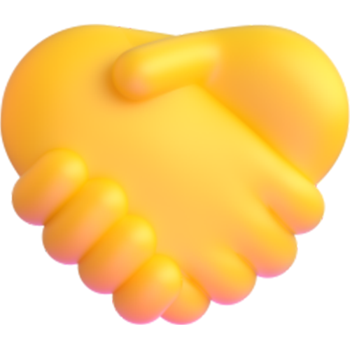
Išreikšk save lengviau
Lengvai rinkis korteles ir sudėk sakinį.
Kad kasdienybė būtų lengvesnė
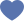
mielas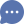
komunikabilus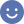
draugiškas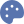
kūrybiškas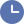
lankstusEsu mama, auginanti dvi autistiškas mergaites. Kai mums trūko tinkamų būdų bendrauti, sukūriau Voicer – paprastą programėlę su kortelėmis. Dabar kuriu įrankius, kurie padeda autistiškiems žmonėms būti savimi ir gyventi savarankiškiau.
Mūsų istorijaKalbinis AAC redaktorius, sukurtas tam, kad kasdienis bendravimas taptų paprastesnis ir aiškesnis
Apie Voicer Atidaryti Voicer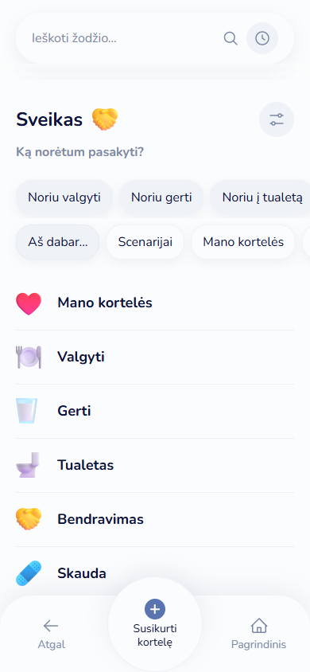

Lengvai rinkis korteles ir sudėk sakinį.
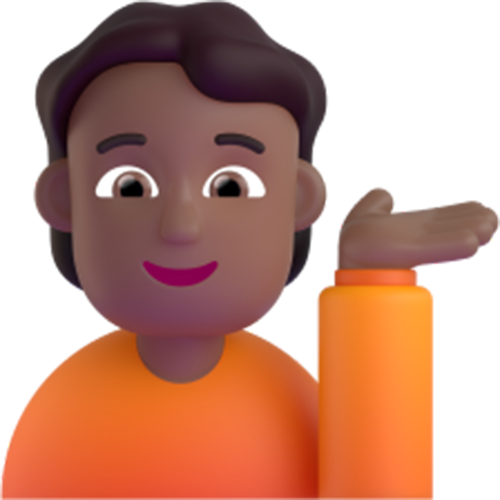
Kortelės padeda dalintis mintimis ir poreikiais.
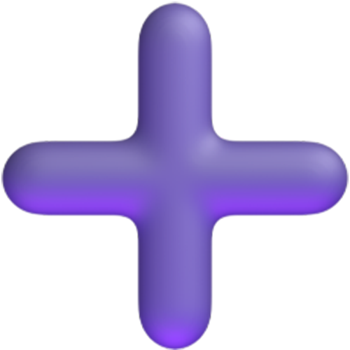
Pridėk asmenines korteles, pritaikytas tavo kasdienybei.
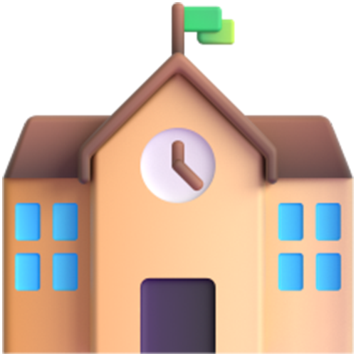
Veikia ir dideliame kompiuterio ekrane – patogu per multimediją.
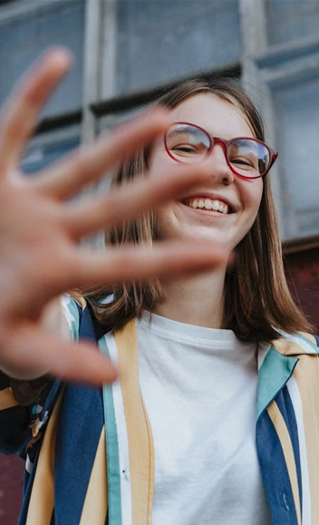
Kiekvienas indėlis padeda tobulėti „I'm Autistic“ projektui ir kurti jį dar geresnį.

Turi idėją, kaip galėtų projektas prisidėti prie tavo kokybiškesnio gyvenimo.
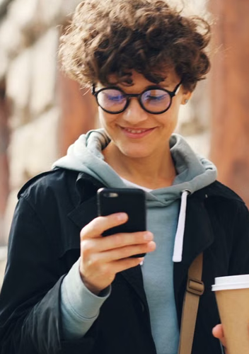
Papasakok apie „I'm Autistic“, kad apie jį sužinotų tie, kam to reikia.